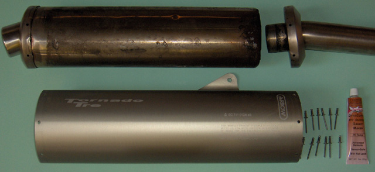

Sealing The Standard Arrow Can
(updated 23 Nov 2007)
Benelli didn't bother to seal the joints of the original Arrow cans. Just when, or if, they decided to
start doing this, I'm not sure, but mine certainly had no sealant in evidence anywhere. This caused soot
and other stains, to build up on the can and swing-arm, which is difficult to remove. Here's how to fix
it.

The Original Arrow Can Dismantled
You'll Need:
12x Pop Rivets - 4.8 mm dia. by 11 mm long (to join material thickness of 4.5mm)
- these are blind stainless steel rivet and shaft
- flange diameter is 10mm
- Specialty Fastners (Fyshwick ACT) Part number 73STST6-4
A tube of high temperature RTV Silicone Sealant that can withstand 370C
- DynaGrip "Copper RTV Silicone", P/N: 47101, made by A.F.C. International P/L USA (Arrow use a product
from Arexons called Motorsil. They measured the max. temperature at about 300C)
Procedure:
1. Punch the centre pins of each rivet in.
2. Drill out the rivet using a 5.0 mm drill
- You may need to keep punching the centre pin down until the drill will remove the rivet.
3. The tail piece can be removed with a hooked flat steel - 2mm thick x 6mm wide by 100-150mm long
- engage the hook inside the tail pipe lip, grip the the hook shaft with multigrips, and tap the grips
with a hammer, while supporting the can body in a vice. You may need to use a thin knife to break the
existing seal. As new, there was no sealant on my can, so this was not necessary.
4. Remove the pop rivet heads. You may need to bend the inner can shell away from the endplate, to allow
this. Use a rivet hole to gain access to pull the inner can shell back into position.
5. The feed pipe can be gently prised off.
6. Clean the endplate & mating surfaces with oven cleaner and a ScotchBrite Pad. Clean the residue with
Methylated Spirits, Ethanol or IsoPropyl Alcohol (IPA).
7. Insert the tail piece until only the end plate is exposed. Make sure it is the correct orientation
- test it on the bike. The end pipe should exit horizontally.
8. Recheck the orientation!
9. Apply generous amounts of sealant at peaks of the oval plate, and smaller film thickness elsewhere.
10. Insert the piece, wiping the excess sealant into the joint as you go.
11. Line up the rivet holes with the end of a fine centre punch
12. Apply sealant to the pop rivet tips to ensure they seal.
13. Wrap the chromed escutcheon around the can so that the join finishes on the inside, and the overlap
faces down.
14. Line up the holes again with the centre punch.
15. Insert rivets to fit. The overlap rivet may need coaxing with a few hammer taps on the back of the
riviting gun.
16. Once the fit is correct, draw down each rivet in turn.
- the sealant should be expressed from the joint as it tightens.
17. Clean the excess sealant immediately with a kerosene soaked rag.
18. Repeat the procedure for the feed pipe.
19. Final cleanup should be with IPA or similar.
20. Allow the sealant to cure for 24 Hours before use (or you may blow it out!).